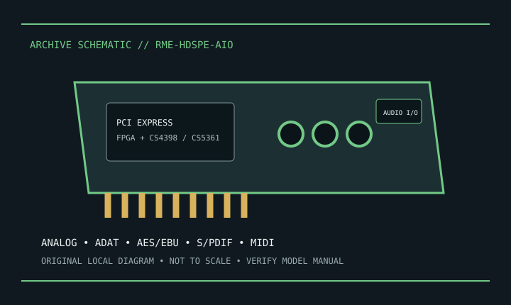

[ INDIVIDUAL MODEL // SOUND HARDWARE ]
RME HDSPe AIO
PCIe x1 hybrid I/O card with 2 analog input/output channels and AES, ADAT and S/PDIF digital connectivity.

Model-specific specifications
| Exact model / identity | PCIe x1 hybrid I/O card with 2 analog input/output channels and AES, ADAT and S/PDIF digital connectivity. |
|---|---|
| Audio processor / codec / DAC | RME FPGA-based HDSPe system; Cirrus Logic CS4398 DAC and CS5361 ADC for analog conversion. |
| Channels / resolution / sample rate | 2 analog input and 2 analog output channels plus digital I/O; 24-bit operation up to 192 kHz, with channel count varying by interface/rate. |
| Analog and digital ports | Analog I/O breakout cable; coaxial S/PDIF and AES/EBU breakout; ADAT optical I/O, MIDI and optional word-clock. Some connections require optional cables/modules. |
| Slot / host interface | PCI Express x1; match the breakout cable. Optional analog expansion and word-clock modules are separate. |
| Operating-system support | RME provides Windows and macOS driver packages. Match driver and TotalMix version to OS and original AIO hardware revision. |
Compatibility & preservation
Do not apply AIO Pro specifications. Breakout cables and options change available I/O; confirm the revision and driver support.
- Photograph the card label, board revision, bracket connections and included accessories before service.
- Retain the exact driver, firmware and operating-system version known to work with this model.
- Confirm slot fit, connector pinout, breakout hardware, channel mode and supported sample rate before integration.
Manufacturer sources
- RME HDSPe AIO — official product informationManufacturer product, technical specification, or model manual source.
- RME HDSPe AIO — official user manual PDFManufacturer product, technical specification, or model manual source.
- RME HDSPe AIO — manufacturer technical sheetManufacturer product, technical specification, or model manual source.